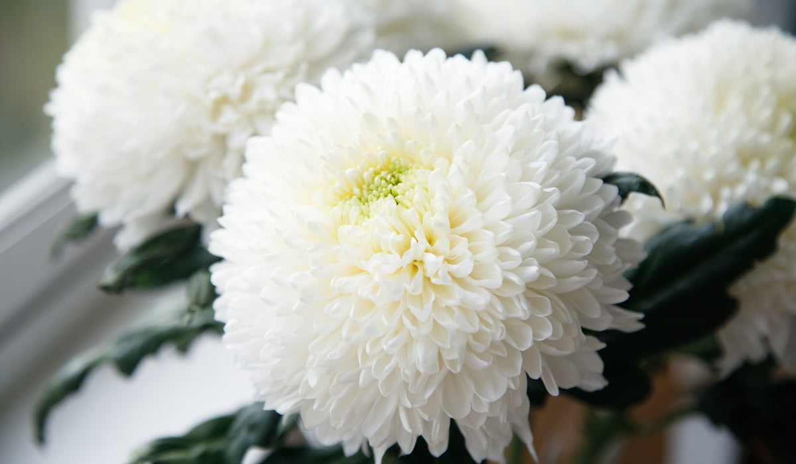

Crisantemo Blanco
Código histórico: Verdad absoluta, honestidad y lealtad.
Con los crisantemos blancos quiero dejar constancia de la honestidad y la lealtad que te profeso. Antes he recurrido a mentiras por cobarde como ya lo sabes, sin embargo, mi amor por tí es sincero y no volvere jamas a mentirte porque quiero construir algo indestructible contigo, sinceridad y lealtad total es lo que te ofrezco de aqui en adelante.
En el lenguaje victoriano, esta flor representa la verdad innegable. Te la entrego para dar cierre definitivo a un ciclo de errores y dar inicio a algo totalmente nuevo, construido sobre una base limpia y transparente.
Más información, vease crisantemo blancoDiccionario de flores de: Greenaway, Kate (1884), pagina 18 y 50.